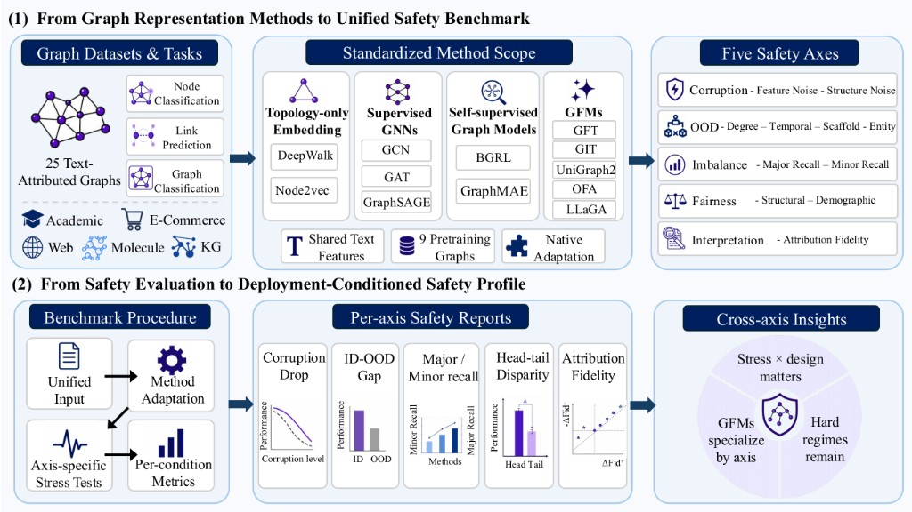
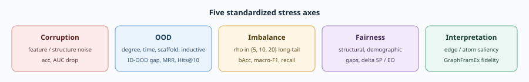
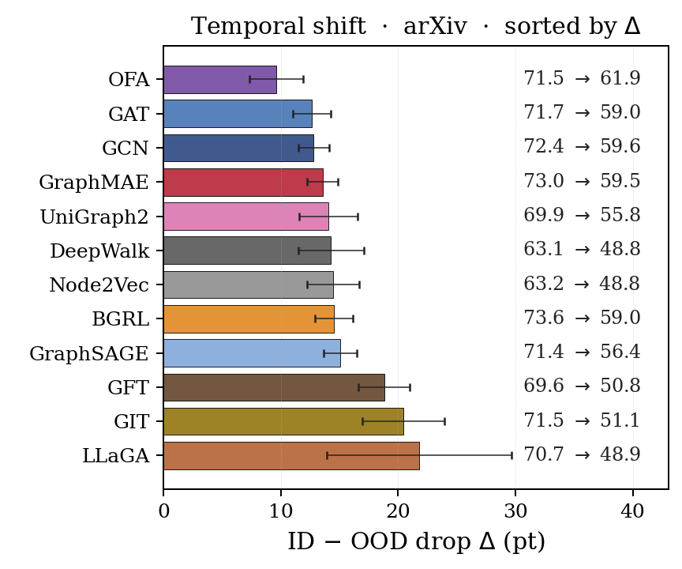
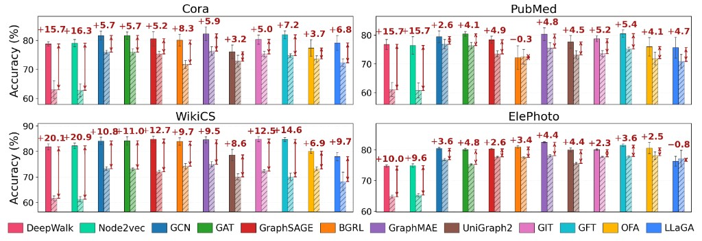
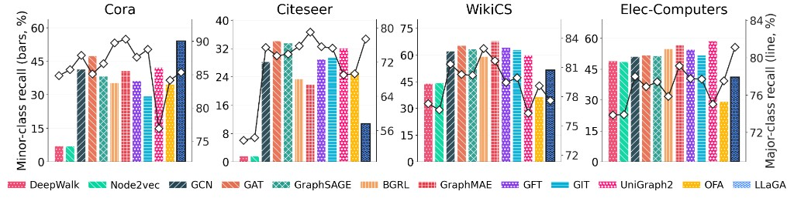
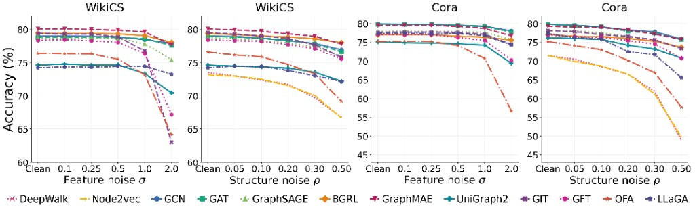

What is GRL-Safety?
GRL-Safety is a benchmark to evaluate how reliably graph models behave when deployment conditions drift or controlled stress tests probe weaknesses. It evaluates twelve graph representation methods on twenty-five text-attributed graphs spanning node classification, link prediction, and graph classification.
The benchmark is organized around five safety axes:
- Corruption — feature noise and structure noise; accuracy or AUC drop versus clean runs.
- Out-of-distribution (OOD) — degree, temporal, scaffold, and inductive-entity shifts; ID–OOD gaps and ranking metrics on knowledge-graph tasks.
- Imbalance — long-tail node classification; balanced accuracy, macro-F1, and recall.
- Fairness — structural and demographic slices; disparity and utility-style gaps per protocol.
- Interpretation — saliency and ablation-style probes; GraphFramEx fidelity on supported methods.
Framework overview
Stage (1) ties together the data and task surface (25 text-attributed graphs), the standardized method scope (four tiers, twelve models, shared SBERT features, nine-graph pretraining where used), and the five safety axes you read in the list above. Stage (2) shows how those pieces feed a single evaluation loop: unified inputs, per-method adaptation, axis-specific stress tests, per-condition metrics, per-axis safety reports, and finally a compact cross-axis readout of how design choices interact with stress.

Safety axes

Sample results




Citation
@inproceedings{grl-safety,
title = {On the Safety of Graph Representation Learning},
author = {TBD},
booktitle = {OpenReview},
year = {2026},
url = {https://openreview.net/forum?id=6dFrUSgvzE}
}